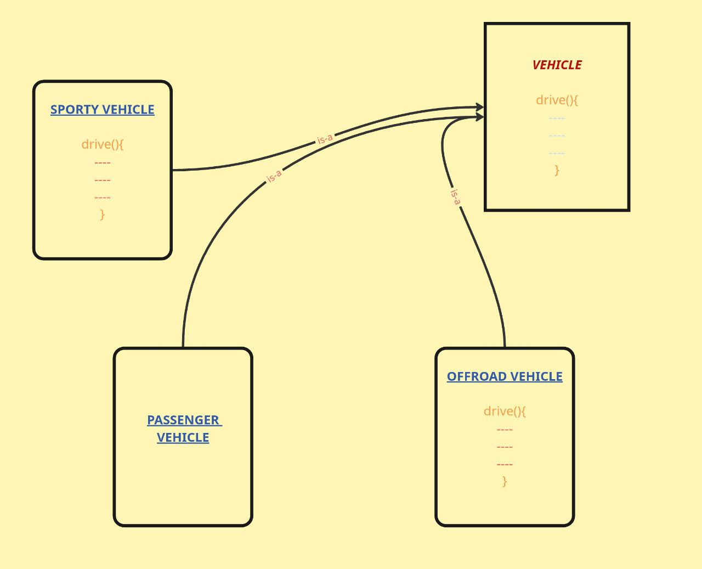
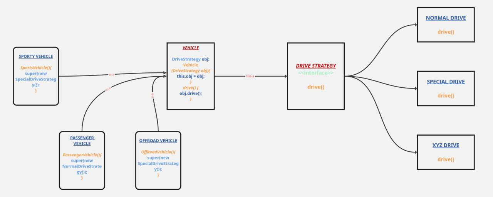

Initial Problem - Code Duplication

Problem: Now, suppose the drive() overridden by OffRoad Vehicle is same as Sporty Vehicle, then that's the repetition of code.
Q. What is a Design Pattern?
→ A Design Pattern is a reusable solution to a commonly occurring problem in software design. It's not a finished piece of code you can directly insert into your program, but rather a template or blueprint for how to solve a problem in different situations.
Strategy Design Pattern
The Strategy pattern is a behavioural design pattern that lets you define a family of algorithms, encapsulate each one as a separate class, and make them interchangeable. It allows the algorithm to vary independently from clients that use it.
PROBLEM STATEMENT:
You have a class that needs to perform a specific operation, but there are multiple ways (algorithms) to perform that operation. The challenge is:
- You don't want to hardcode all algorithm variations into one class (violates Single Responsibility Principle).
- You want to be able to switch between algorithms at runtime.
- You want to avoid large conditional statements (if-else or switch) to select algorithms.
- You want to add new algorithms without modifying existing code (Open/Closed Principle).
Drive Strategy Pattern

Key Points:
- Each vehicle type can have its own drive strategy without code duplication
- SportyVehicle and OffRoadVehicle can both use SpecialDriveStrategy without repeating code
- Follows Open/Closed Principle - new strategies can be added without modifying existing code
- Follows Single Responsibility Principle - each strategy class has one responsibility